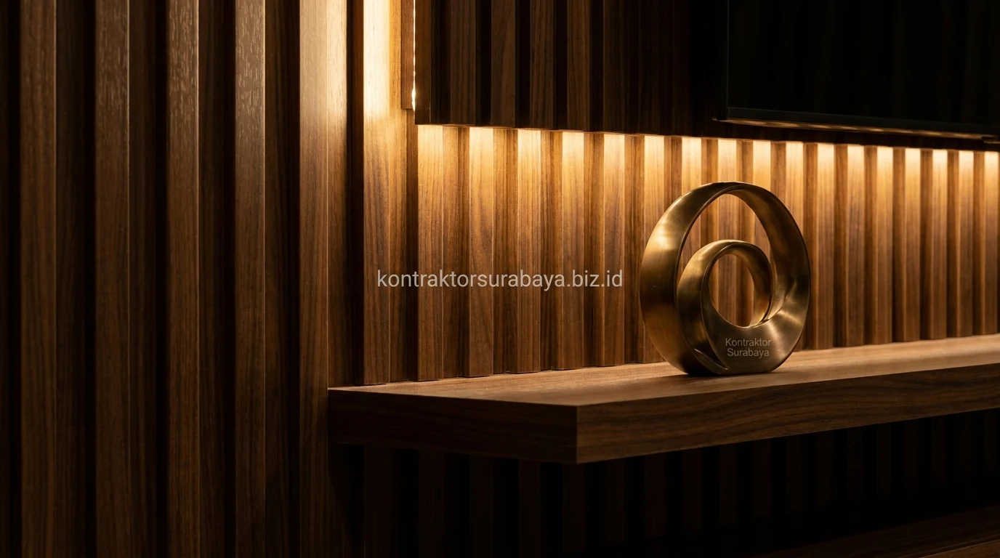

Ruang keluarga merupakan jantung interaksi sebuah rumah hunian di Sidoarjo, mulai dari kawasan perumahan Kahuripan Nirwana, Pondok Jati, Taman Pinang Indah, hingga Puri Surya Jaya. Menghadirkan suasana yang hangat dan estetik di ruang keluarga kini banyak diwujudkan melalui pemasangan custom backdrop TV dengan aksen kisi-kisi kayu vertikal (wood slatted panel / fluted wall panel).
1. Kenapa Backdrop TV Menjadi Elemen Fokus Penting di Ruang Keluarga?
Backdrop TV yang dirancang dengan tekstur dan material berbeda dari dinding sekitarnya secara alami menarik perhatian mata, sehingga ruang keluarga memiliki titik fokus visual yang jelas dibanding dinding polos tanpa elemen tambahan.
Ruang keluarga yang hanya memiliki dinding bercat polos di belakang televisi cenderung terasa datar, dingin, dan kurang memiliki karakter desain. Penambahan aksen kisi-kisi kayu memberi kedalaman dimensi 3D dan sentuhan alami yang mewah, menjadikan area tontonan keluarga sebagai pusat estetika yang memikat tamu yang berkunjung.
2. Karakteristik Desain Backdrop Kisi-Kisi Kayu yang Elegan
Garis vertikal kayu solid atau panel veneer, jarak antar kisi yang konsisten, kombinasi warna natural hangat, dan pencahayaan tersembunyi di celah kisi adalah empat karakteristik utama desain backdrop kisi kayu modern:
- Aksen Garis Vertikal Tegas: Memberi ilusi optik langit-langit ruangan yang terlihat lebih tinggi dan lapang.
- Jarak Antar Kisi Presisi (Modul 2–3 cm): Menjaga harmoni dan simetri visual sehingga hasil perakitan tampak rapi buatan pabrikasi profesional.
- Pilihan Warna Kayu Earth Tone: Perpaduan warna walnut, warm teak, atau light oak yang kontras dengan dinding latar abu-abu semen atau marmer putih.
- Celah Sirkulasi Udara: Celah pada panel membantu pelepasan panas dari perangkat elektronik televisi dan soundbar.
3. Material Kayu yang Direkomendasikan untuk Backdrop TV
Terdapat empat pilihan material utama yang dapat disesuaikan dengan konsep interior dan alokasi anggaran renovasi rumah Anda di Sidoarjo:
- Multipleks Lapis HPL (High Pressure Laminate): Alternatif paling praktis, tahan gores, tahan air, dan memiliki variasi corak serat kayu yang sangat luas dengan biaya terjangkau.
- Veneer Natural Kayu Jati / Oak: Lembaran kayu asli berkualitas tinggi yang direkatkan pada panel multipleks, menghasilkan tekstur serat kayu alami asli yang halus dan mewah.
- Kayu Jati Belanda (Pine Wood): Pilihan kayu solid bernuansa Scandinavian-Japandi dengan mata kayu khas yang artistik dan bobot ringan.
- Kayu Solid Mahoni / Kamper Finishing Duco / Melamik: Material kayu solid premium yang kokoh, berbobot mantap, dan tahan lama puluhan tahun untuk hunian mewah.

4. Bagaimana Kisi-Kisi Kayu Membantu Menyembunyikan Kabel dan Instalasi?
Celah di antara kisi-kisi dan rongga di balik panel kayu dapat dimanfaatkan sebagai jalur tersembunyi bagi kabel power TV, kabel HDMI, kabel speaker sound system, set-top box, hingga colokan stop kontak, sehingga tampilan depan backdrop 100% bersih tanpa ada kabel menggantung berantakan.
Di Kontraktor Surabaya, setiap backdrop TV dirancang dengan sistem panel akses servis (magnetic push-to-open door) atau pipa conduit PVC internal. Hal ini memudahkan penambahan perangkat elektronik baru atau perawatan kabel di masa depan tanpa perlu merusak susunan kisi-kisi kayu.
5. Kombinasi Pencahayaan yang Memperkuat Kesan Elegan pada Backdrop
Lampu LED strip tersembunyi (cove lighting) dengan temperatur warna warm white (3000K) yang dipasang di balik panel kisi kayu menciptakan bias cahaya dramatis dan bayangan lembut di sepanjang alur vertikal.
Efek pencahayaan tidak langsung (indirect lighting) ini tidak hanya mempercantik ruangan saat malam hari, tetapi juga berfungsi sebagai lampu ambient tontonan yang nyaman di mata, mengurangi silau kontras layar TV saat menonton bioskop mini bersama keluarga.
6. Kesalahan Umum dalam Membuat Backdrop TV Kisi Kayu
Beberapa kekeliruan yang sering terjadi saat memesan backdrop TV tanpa perhitungan arsitek interior:
- Jarak Kisi Tidak Rata: Pemotongan manual di lapangan tanpa mesin presisi membuat jarak kisi bergelombang dan merusak estetika.
- Ukuran Tidak Proporsional dengan TV: Lebar backdrop yang terlalu kecil dibanding bentang TV 55–75 inch membuat ruangan terasa sesak dan jomplang.
- Lupa Menyiapkan Jalur Ventilasi TV: Televisi modern membuang panas dari bagian belakang; ketiadaan sirkulasi udara bisa memperpendek usia panel elektronik TV.
- Warna Kayu Tidak Match: Memilih warna kayu kemerahan pada ruangan bernuansa monokrom abu-abu modern yang menyebabkan tabrakan skema warna interior.
"Keindahan backdrop TV kisi-kisi kayu terletak pada presisi millimeter modul vertikal dan kelembutan pendaran cahaya tersembunyi yang menyatukan kenyamanan ruang keluarga."
Setiap ruang keluarga memiliki ukuran dinding dan pencahayaan yang unik, sehingga desain backdrop kisi kayu perlu disesuaikan melalui konsultasi langsung dengan tim desain interior kami. Lihat referensi visual lebih lengkap pada galeri proyek kami, atau pelajari cakupan layanan pada halaman jasa desain interior.